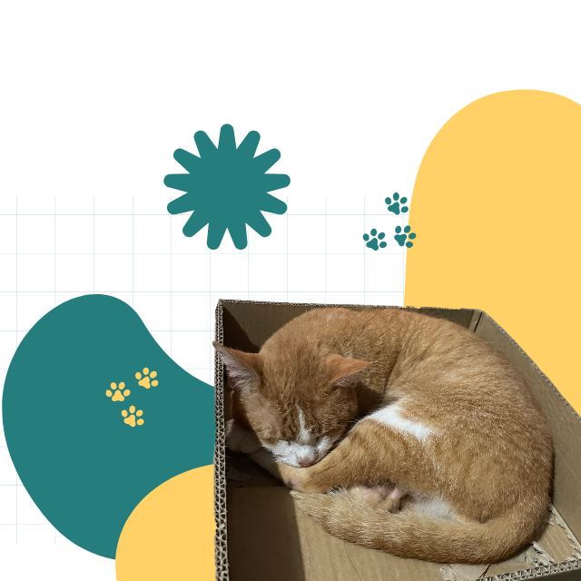

About me
Hi there! I'm Janis, a content writer and designer based in Laguna who loves working with clear, accessible content. Right now, I'm studying BA Multimedia Studies at the UPOU, writing essays, editing videos, and trying to improve my Mandarin Chinese and graphic design skills.
I'm also trying to read more books and watch more films this year. The last film I saw was 58th (2026), a film about the Maguindanao Massacre directed by Carl Joseph Papa.
Things I love
- Spending time with my cat Yasumeow
- Having freshly brewed coffee and green tea
- Cooking with whatever's left in the fridge
- Trying new restaurants and coffee shops
- Playing "League of Legends: Wild Rift", "Legends of Runeterra", and "Hearthstone"
- Reading books and listening to podcasts
Ongoing projects
Loading projects...
